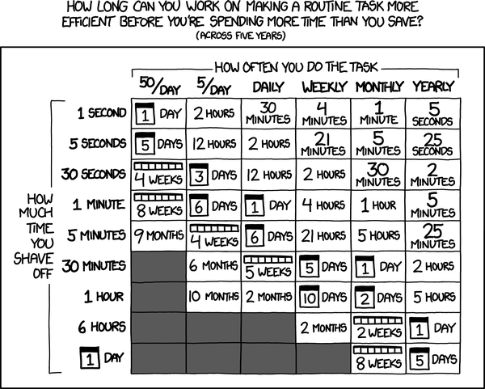
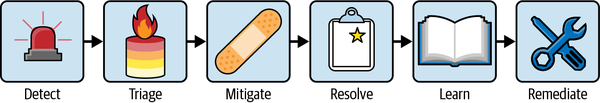

自动化是SRE 的关键组成部分。SRE应努力对自己负责的系统进行工程化建设，而不仅仅是维持其运行。许多，甚至所有的运维任务都可以实现自动化。
自动化的原因包括：
人们普遍给出的自动化主要原因是节省时间。生产力专家几乎可以指出生活和工作中任何方面可自动化的部分。任何持续运行的系统都伴随着维护任务。负责执行这些任务的工程师每天或每周都能感受到这些任务的存在，憎恶重复性工作并考虑如何“通过自动化让自己摆脱当前的工作”是 SRE 文化的一部分。虽然这些类型的任务可能是最先想到的，但任务的频率或烦恼程度不应成为唯一的动机；还应考虑以下三个原因。
自动化可以减少检测、分诊、缓解或解决事件所需的时间。虽然节省的时间可能看起来不多，但其对业务的影响可能很大。确保大型在线商店在“网络星期一”出现全面宕机时，能够在 5 分钟而不是 15 分钟后得到缓解，很可能比将每周发布验证过程减少一小时对业务更为重要。一些严格的服务水平目标（SLO）只有通过完全自动化才能实现。自动化系统可以在几秒钟内采取行动，而人工操作员通常需要许多分钟，具体取决于问题的复杂性。
人工操作员可能会犯错或遗漏步骤，特别是在高压情况下。自动化可以提高一致性，使流程更加可预测和可重复，同时也便于监控。这种一致性在事件发生时尤为重要，因为紧急缓解措施往往具有较高的权限，因此风险也随之增加。应对前所未见的故障的压力可能导致值班人员犯错，而自动化（即使只处理缓解步骤的一部分）也会冷静地继续执行。
一旦实现自动化，流程可以进行扩展，要么是横向扩展（例如，同时更新1000台服务器），要么通过将它们集成到更高级别的自动化中进行扩展。最终，一系列工具、自动化以及带有明确取舍的配置可以演变为一个平台，由一个中央团队维护许多下游团队可以使用的功能。随着用户基础的扩大，自动化的投资回报率会提高。例如，如果在生产系统中自动监控产生的异常获得了生成常见问题代码修复的功能，平台的所有用户都将受益。
在考虑自动化什么时，这些原因都应该被权衡。在《何时自动化，何时不自动化》中，我们将讨论如何决定具体的项目。
自动化在发展，应始终由需求驱动。这一发展通常经过以下几个阶段：
随着自动化案例的确定，它们将逐步实施。即使是部分自动化也能带来显著的好处，而且对于那些完全自动化过程困难或不可行的不常见操作，部分自动化可能已经足够。例如，软件产品在首次发布时对每个客户进行的定制，最好是部分自动化。在这种情况下，保留一些手工步骤是合理的，尤其是如果这样可以使首批客户提前一天收到产品的话。
然而，也存在在部分自动化阶段陷入困境的风险（参见 “增量自动化”），这可能会阻碍一致性和可扩展性的关键优势。
自动化所有步骤可以让您获得所有好处，并继续向更高级别的自动化或利用这些新能力扩展系统或 SRE 的参与度。完全自动化是亚线性扩缩的关键，这里意味着以比所需人工努力更快的速度增加业务影响。
完全自动化可以有不同的形式：
如果时间节省是唯一的考虑因素，你可以使用著名的“值得花时间吗？”计算器，来自xkcd.com/1205，如图 13-1所示。然而，在实践中，SRE 团队还应考虑前面讨论的一致性和可扩展性方面的好处。

识别出可自动化的流程时，工程师往往会立刻想把它精简，并从快速实现一个本地方案中获得即时满足。这可能催生大量脱离核心业务逻辑、只有少数专家了解且维护成本高昂的本地工具。如果某个问题在平台层解决的成本只比本地自动化略高，直接实现长期方案会获得更高的投资回报。（详情见“渐进式自动化”。）
通过概括和共享解决方案，可以降低本地自动化的维护成本。即使只有两个团队共享一个自动化解决方案并轮流开发功能，在评审和测试中增加的关注，以及更频繁的使用，都可能决定一个工具是脆弱的还是强大的。
大型组织通常会建立中央团队来开发共享的自动化并搭建平台，使这些能力对所有人可用。
谷歌的 SRE 通常负责规划和配置其所负责服务的容量（参见第 15 章）。这包括选择位置和容量规模策略。自动化生命周期通常分为以下四个阶段：
服务在单个位置运行，副本数量是硬编码的。
添加位置冗余并启用具有自动调整规模的水平扩展。
在所有相关地理位置运行服务，估算发布时的无机增长，预先分配容量，并将规模调整从副本数量转向客户使用指标。
持续优化和自动化布局和尺寸，确保冗余的同时最小化成本。
由于许多服务共享容量配置工具的需求，自动化可以从在平台层开发中受益。
谷歌在其内部平台上使用两层独立的自动化工具来进行服务的规模调整：
在短时间尺度（几分钟到几小时）内，资源限制和副本数量会根据当前使用情况进行调整（类似于 Kubernetes 中的水平和垂直 Pod 自动扩缩）。
对于较长的时间尺度（从几天到几个月），需求预测会与来自发布带来的预期非自然需求相结合，并与现有可订购供应匹配，以选择地点并提出规模方案。
这些自动化工具是集中开发的，并且是谷歌生产平台的一部分。因此，服务所有者可以以最小的努力获得好处，组织可以在大规模上应用改进。鉴于这些机会，生命周期归结为：
在平台上构建。不要考虑容量规划；只需使用默认设置。
默认设置仍然足够好。
默认设置中没有对非有机增长进行建模，但一旦存在用户或请求的估计，中央工具就可以将其转换为资源数量。
中小型服务可以运行在默认设置下，并依赖完全自动化的容量规划。大型服务通常会调整其配置，以明确平衡成本与延迟或可用性，调整扩容速度，并验证更改。他们还会与长期资源规划和订单紧密集成。
在开发这些工具时，选择正确的抽象层至关重要。为了使自动化具有普遍的适用性，它需要足够抽象，以减少人们所见的复杂性，同时仍允许进行所有必要的修改。大多数用户不需要调整需求时间序列预测，但他们可能希望根据服务特性选择规划平均、90%或峰值负载。同样，大多数用户不关心选择哪个位置，但他们可能需要配置位置灵活性和依赖关系的同址要求。
容量规划的集中自动化确保了我们之前讨论的所有好处：
负责中小型服务的团队不必考虑容量规划。他们可能会收到通知或请求来验证更改，但他们不必决定使用哪种冗余级别或如何正确预测需求。即使对于大型服务，大多数相关功能也已经存在，团队的重点可以放在配置上，而不是编写自动化。
在大规模情况下，罕见情况会变得常见，因此用于紧急容量变更的工具是可用的并且与持续容量规划相结合的。
自动化容量规划不会忽视地点或误解图表。关于资源消耗的预测依赖于一致且可预测的自动化。当模拟和A/B测试建立在一致的平台级自动化之上，而不是对手动流程的更改时，它们会成为可靠的预测。
平台层面的容量规划使这种自动化可以用于所有服务。在大规模情况下，更多功能值得实现，从支持新的资源类型到建模计算和存储之间的依赖关系，或自动化不同位置之间的迁移。
值班人员需要 来应对事件，重点是通过事件生命周期的各个阶段进行管理（图13-2）。遵循此过程可确保将经验教训转化为系统改进，从而实质性地降低同类事件 再次发生的可能性。

在过去的十年中，这种经验已经为谷歌的值班人员演变：我们已经从使用多个专注工具过渡到使用一个通用的事件响应管理（IRM）平台。
我们的IRM平台支持整个事件生命周期，使得在整个公司范围内更容易自动化更多值班人员的操作流程，并且对事件状态有更高的可见性。值班人员在压力情况下可以受益于平台的指导——他们无需过多依赖记忆培训细节，而自动化帮助简化了他们的操作。因此，更容易遵循谷歌的事件管理流程（见第10章）。尽管有效的人类响应仍然是一项关键技能，自动化通过提高重复性、加快流程、确保一致性，并改善整个组织中利益相关者和客户的可视性，帮助值班人员集中注意力。
以下示例说明了平台对可扩展性的支持如何使自动化集成到事件管理流程中：
警报会结合来自所有可观测性来源的相关信号，以标记客户影响，突出异常模式，并根据生产知识图谱（参见 “可观测性和监控”）关联系统依赖中的相关事件。这种对实时情况的数据驱动感知，结合相关的历史背景，加快了分类处理并缩短了有效缓解的时间。
为了能够有效应对涉及多个系统或需要多个团队专业知识的事件，自动化可以自动分配事件角色以组建核心响应团队。自动化还可以建立专门的协调工具（共享文档）和与团队及组织最佳实践一致的通信渠道。此外，基于警报的性质，自动化可以建议并触发适当的自动缓解操作（例如，回滚、流量切换），从而最大限度地缩短缓解时间（参见“从调查到自动缓解”）。
自动化支持向领导层、支持团队和其他相关方提供状态更新，以确保对事件影响和进展的广泛、一致和及时的了解，同时减少对响应团队的干扰。客户影响评估自动化有助于新发事件的检测，从而加快客户沟通。新发事件
自动化在事件发生期间捕捉关键事件——例如影响声明、缓解措施和响应人员笔记——以自动填充事后分析并指导学习过程。这有助于事后分析的撰写者迅速超越对事件发生经过的记录，转而分析和理解更广泛的社会技术系统（参见 “演变事件学习实践”）。这样，值班人员可以更快速地识别促成原因，并创建有效的行动项目，将经验教训转化为具体的预防措施和系统改进。
这些针对性的自动化示例中的每一个都在当前的关注点内为值班人员带来直接价值，而无需额外的上下文切换。你们团队的需求和应用可能会导致自动化在你们这里呈现出不同的形式，就像在谷歌各个团队之间的差异一样。
通过自动化事件响应的各个方面，IRM 从根本上改变了我们的工作和工作流程，并减少了在重复分析、通信和流程上花费的时间。因此，我们能够专注于需要人类判断、知识和协作的关键领域。
上一节介绍了为什么你应该进行自动化。然而，要获得完整的了解，你还必须考虑潜在的陷阱。虽然SRE的本能是自动化所有事务，但选择正确的任务需要一种有纪律的方法。如果不加控制，自动化可能引入新的风险，掩盖潜在问题，并最终创造比它节省的更多的工作。本节提供了一个用于做出慎重、有效自动化决策的框架。
如前所述，大多数操作任务可以自动化，但重要的是要意识到潜在的缺点。在启动自动化项目之前，请考虑这些常见的陷阱：
在没有健全安全控制的情况下自动化控制关键任务功能的系统，是灾难的根源。程序缺陷、配置错误或意外数据都可能引发人类操作员本可以预防的灾难性故障。自动化功能越强大，其安全机制就必须越复杂。这些安全机制可能包括速率限制、可执行的范围限制、“不造成伤害”检查，以及何时使用触及预定义安全阈值时中止自动化并升级至人工操作的断路器。关于如何整体分析系统以识别危险自动化（以及其他问题），请参见第12章。
自动化几乎从未完全实现，而复杂但不完整的自动化会造成一种悖论。它可能处理99%的情况，这意味着人工操作员很少需要干预。然而，当那个罕见的极端情况发生时，操作员可能已经失去了有效干预所需的技能和情境意识。这种现象在侧栏“自动化的讽刺现象”中有所描述，是一个关键的人因考虑——人类做得越少，当最需要时，他们可能能做的也越少。
自动化系统并不总是按照操作员的预期运行。因此，自动化并不会消除人的工作——相反，它将人从主动角色转变为监督角色。如果没有足够的可观察性，自动化可能会以其行为让操作员感到意外，并使问题解决变得极其困难。
将自动化当作根本存在缺陷的系统的创可贴，是一种常见陷阱。它会让有缺陷的架构看似可持续，从而延长其寿命。虽然自动化可能减少操作员的琐事，但系统的根本局限最终会阻碍更大的业务目标；当系统不可避免地被替换时，自动化投资也会付诸东流。
自动化会随着时间带来价值。自动化一个寿命较短的系统可能会产生较差的投资回报，同样，自动化一个流程稳定性低的系统（即实施或相关流程经常变化的系统）也可能效果不佳。初期的工程成本以及为了使自动化与系统变化保持同步所需的持续维护，很容易超过节省的时间。此外，这种持续的变化使自动化变得脆弱，增加了其意外失败的风险——通常发生在最糟糕的时刻。
一般来说，自动化在确定性任务上表现出色。当必须解释模糊信号或做出需要细腻人类判断的决策时，它就会失败。正如在第21章中讨论的，人工智能正不断推动自动化能够处理模糊性的边界，但认识当前技术状态的局限性至关重要。试图自动化超出这些限制的任务将导致错误，而纠正这些错误所需的努力往往超过自动化本身节省的成本。这一陷阱与前面边栏中讨论的“自动化的讽刺”紧密相关，因为干预一个表现异常的自动化系统往往比执行原始手动任务更为复杂。
决定 何时自动化需要一种超越简单节省时间计算的平衡方法（参见 图 13-1）。以下用于做出这些决策的框架将定量分析与定性评估结合起来。
任何自动化决策的基础是成本效益分析。虽然输入通常需要估算，但这个公式提供了一个明确的起点：
虽然节省超过成本是项目可行性的一个很好的初步指标，但工程师往往低估了初始成本和持续成本——特别是将自动化适应不断发展的系统所需的努力——因此在进行此类估算时必须小心。此外，投资回报为正并不意味着绿灯通行；它只是最终决策过程中的一个输入。你不仅必须评估下一节中描述的不可量化因素，还必须始终将一个自动化项目与其他潜在的自动化项目进行权衡，以确保团队优先处理影响最大的工作。
纯粹的定量分析很少足够。需要作出明智判断，以权衡那些难以用财务模型量化的因素，例如：
有时，看起来在账面上呈现净负回报的自动化在战略上是必要的。考虑对大型设备群应用安全补丁。由于缓慢或不一致的推广而导致的数据泄露的财务风险巨大，尽管很难精确量化。在这些情况下，速度和一致性本身就是特性，而自动化是实现大规模这些特性的唯一可行方式。
在考虑自动化时，你还必须计算降低其风险的成本。一个强大的系统需要强健的安全系统机制。设计、建造和维护这些保障措施的成本是总投资中一个关键且常常被忽视的部分。
如果自动化依赖于模糊的信号，定量模型很可能存在缺陷。您会高估自动化成功的频率（从而节省时间），并低估处理其错误的持续维护成本。2
纯粹的定量分析可能会忽略某些琐事给人带来的成本（有关琐事的更多信息，请参见“琐事”和“何时可以做琐事，何时不应做”）。一个只需五分钟的任务，但却经常在半夜叫醒值班人员，或者在白天导致持续的上下文切换，会对士气、专注力和团队健康产生不成比例的负面影响。即使从表面上看节省的总时间似乎很少，自动化此类任务仍能带来显著的缓解效果。
有关评估可靠性的好处及其影响因素的更多信息，请参见 第二章。
结合可量化和不可量化的元素需要经验和判断。以下示例说明了这一过程在实践中的应用。
自动化网络硬件故障缓解展示了可量化和不可量化分析的结合。从理论上讲，人类操作员可以对警报做出反应，并应用配置更改以在运行中绕过故障组件。在小型网络上，这可能是可行的。
自动化的可量化节约是显而易见的（减少操作员时间，避免SLA信用）。然而，主导因素是不可量化的。首先是速度。每当故障没有得到缓解，客户可能会体验到性能下降或完全中断，这会导致收入损失（部分可量化）和声誉损害（不可量化）。对于谷歌的服务来说，其商业案例极为正面。
然而，自动化引入了自身的重大风险：一个错误的信号（例如，一个检测漏洞提示整个硬件群中的所有设备）可能导致自动化将流量从健康的基础设施中转移出去。在大规模情况下，自动化可能引发比它设计用来防止的故障大得多的停机。因此，在我们的案例中，项目的核心部分是一个复杂的安全系统，它会在自动化的操作超出预设安全阈值时停止自动化并提醒人工（例如，“不要将某个区域的容量耗尽超过X%”）。随着时间的推移，重叠检查的数量增加，使得很难判断哪些操作将被允许，系统常常不必要地阻止容量被修复。维护和调试这些检查代表了巨大的持续成本，这在表面分析中可能会被忽视。
在过去的十年中，谷歌一直在推动将系统隔离成可独立部署的区域副本，以限制软件和配置发布的影响范围。最初，可用的部署自动化非常灵活，但团队需要拼凑自定义脚本来实现区域化。高昂的前期投入和持续维护成本意味着只有管理最高风险服务的团队才能证明这一投资是合理的。对于数百个其他服务而言，区域化的成本实在过高。
与此同时，谷歌正在推动更高水平的可靠性；一个源于基层实践、约束更明确的生产部署框架也逐渐普及。这个框架称为Production on Demand（Pod）。对更高水平的自动化和跨服务一致性的需求，与 Pod 的出现相汇合，彻底改变了谷歌部署服务的方式。
在单一平台上标准化部署自动化，使该单一平台能够普遍提供和维护即插即用的区域化能力。虽然这一标准化推动对现有服务来说成本很高，但它作为一项战略举措得到了推进。标准化的目标不仅仅是减少琐事；而是改变谷歌每个服务的成本收益分析。通过显著降低区域化的成本，在 Pod 上实现标准化使数百个低风险和中等风险的服务能够采用更可靠的部署方式。整个公司的可靠性风险总体上得到了显著降低，为超越任何单一团队预算的明确战略性理由提供了支持。
一种常见的反模式涉及使用自动化来掩盖潜在的系统性问题，而不是解决它们。考虑一个已知存在内存泄漏的服务。随着内存使用量的增加，性能会下降，直到进程崩溃。你可以实现自动化，当内存使用量超过某个阈值时，主动重启服务，作为一种解决方案。
这种方法必须仔细评估。如果内存泄漏很少发生，并且修复它的成本很高（例如，需要几个月的工程时间），这种自动化可能是一个务实且具有成本效益的解决方案。然而，当它掩盖了频繁或日益严重的问题时，就会成为一个危险的反模式。如果内存泄漏导致的重启频率明显高于正常的发布节奏——例如，重启频率从每天变为每小时——那么这种自动化只是制造了技术债务，并掩盖了解决根本问题的紧迫性。战略方法始终是修复根本原因，但战术决策则取决于成本效益分析。
自动化有时被视为提高效率和减少琐事的终极解决方案。然而，我们警告不要试图一次性自动化所有事务。更有效的策略是采取分阶段、循序渐进的方法，这不仅可以简化流程，还能建立信任、改进设计并促进持续改进的文化。这种方法可以用“先看一个，后做一个，再自动化一个”的理念来概括，即先观察手工流程，执行该流程，然后逐步将其转变为完全自动化的解决方案。
在这一旅程中的一个基础步骤是建立一个结构化的审查流程。定期的生产会议（见侧栏“生产会议”），团队可以在会上分析反复出现的问题，如缺陷、寻呼告警及其他形式的琐事，从而提供一个关键的反馈环。通过审查上一周期（例如一周、一个月或一个季度）的寻呼告警和中断，团队可以系统地识别手动、重复性的任务，并确定自动化的最佳候选对象。这一实践确保自动化工作集中于最重要的痛点，而不是琐碎的任务。它也是收集数据的一个机会，从而确保能够准确识别这些任务中最具影响力的改进机会。工程资源有限，因此如下一节所述，谨慎的优先排序至关重要。
一旦某个候选任务被优先考虑改进，自动化过程便开始。第一步是手动执行该任务。这个初始阶段可能是一次重要的学习经历，帮助工程师深入理解任务的细微差别、边缘情况和失败模式。这个“先看一次，再做一次”的阶段为稳健的解决方案奠定了基础。动手实践的知识随后会转化为脚本编写，将手动步骤编码为一系列命令。最初，这些脚本可能比较粗糙，需要人工审查或由人工触发最终操作。随着时间的推移，它们会发展为更复杂、集成的解决方案，最终实现完全自动化的过程。
对测试其中一些场景可能会有一些抵触。例如，如果目标是在某种故障发生时清空某个区域，人们可能不想真正清空该区域来测试自动化——他们理所当然地担心在努力解决因自动化缓解措施而可能发生的中断时，会造成停机。这种担忧的另一种表现出现在DiRT测试中（将在后文中更深入讨论）SRE 书 第33章当人们选择适度、安全的目标进行灾难测试时，因为他们不想制造真正的灾难。这种做法以短期的可能成功换取长期的失败。自动化系统以及参与的人需要能够自信且一致地应对缓解措施（比如排空一个区域），并且在危机之外获得这种经验是很重要的。要进行必要的工作以确保测试尽可能安全，但不要因为担心结果而避免进行测试。
在对一系列自动化项目进行优先排序时，一种常见的方法是寻找最高的投资回报率（ROI）或最大的瓶颈。虽然这是合乎逻辑的，但这种优先排序往往导致首先处理最大、最复杂的项目。如果团队已经被日常运营负荷所限制，可能很难找到时间完成一个大型项目，从而延迟任何节省效果。
一种替代策略，通常在获得自动化工作的认同时更为有效，是通过采用“最快优先”的方法来获得进展。首先从解决快速胜利入手以展示价值。优先考虑那些能够最快完成的自动化项目，即使它们的单独投资回报率较小。这种方法能够立即带来价值，更重要的是，可以收回工程时间。回收的时间可以再投入到下一个自动化项目中，从而形成“自动化滚雪球”——一种正反馈循环，随时间推移能力提升会加快。
渐进式的自动化方法提供了诸多好处。它通过首先处理较小、可管理的问题部分，更早地实现价值。这降低了大型项目未能达到目标的风险，因为每一个小的成功都会积累动力。它还降低了偏差的风险，确保最终的自动化解决方案与实际问题紧密一致。手动操作、脚本编写和精炼的迭代循环，使团队能够在每个阶段测试假设并根据需要进行调整，从而产生考虑到现实世界复杂性的更佳设计。
也许最重要的是，逐步引入自动化可以建立信任和采用度。人们天生对新系统持谨慎态度，尤其是那些接管关键任务的系统。通过逐步引入自动化并在每一步都证明其可靠性，团队可以赢得怀疑者的信任并建立信心。最终的目标是使自动化足够可靠，从而成为执行任务的默认且可信的方法。
在谷歌，增量方法的好处在一次重大的流程迁移中得到了体现，这次迁移是将运行于每个数据中心每个交换机上的软件版本迁移到一个新的控制系统。不同地区的迁移略有不同，并涉及许多步骤，其中许多步骤既重复又琐碎——这是自动化的好机会，因为软件比人工更准确。在部署的早期阶段，自动化有时会为值班人员打开一个工单，附上需要检查的内容以及需要完成的操作。将该任务标记为已完成会重新启动自动化。我们迭代地增加了自动化以覆盖许多这些手动任务，到迁移进入高容量阶段时，几乎没有手动工作剩下了。
除了有许多机会观察增量自动化的好处之外，我们还有几次机会看到自动化带来的风险，这些风险同时影响了许多地方的多个系统，导致严重的停机。一些促成因素使这些停机成为可能，但有一个教训尤为突出：确保你的默认设置不会对所有事物都采取操作。
我们遇到过这样的情况：系统本应接收多个变量，但实际上只接收了一部分，甚至一个也没有。你可能会认为系统会返回错误、安全失败，或者在确定没有收到所有预期输入后再次尝试。然而，在这些中断情况下，系统根据已有的变量进行操作，忽略缺失的变量，产生了令人意外的结果。默认行为不是不采取任何操作，而是对所有内容、在所有地方进行操作。因此，在你构建自动化系统时，或者可能指示你喜欢的 AI 代理来构建它时，请确保默认行为是一种安全且适当的失败模式。特别是，要验证当一个重要变量（例如区域）被遗漏时，系统的表现如何。
最早的版本您的新自动化将需要额外的安全机制、监控和监督，以获得最佳效果。例如，假设您有一项服务会对警报作出反应并采取某种行动。安全的第一步可以包括正确且一致地识别您希望自动化的场景。每当出现自动化会采取行动的情况时，它会向工程团队成员发送警报，团队成员会进行审核并检查是否存在误报或漏报。接下来的渐进步骤是正确识别您希望自动化响应的问题，然后建议（但不执行）该行动，再次通知工程团队，团队可以查看是否准确发现了问题，以及建议的行动是否正确。接下来，自动化可以识别问题并采取行动确定为适当，并通知工程团队，以便他们可以审查结果。以这种方式操作还有一个额外的好处：即使只有一两个工程师在构建新功能，团队中的所有人也会看到这些警报，并能够跟踪正在进行的工作。
一个常见的陷阱是当一个任务实现了90%的自动化时就停止。虽然这看起来像是一个伟大的成就，但部分自动化的过程可能比完全手动的过程更有问题。它会造成一种混乱状态，团队成员不确定是应当信任自动化，还是回到旧有的手动方式。自动化项目的最后10%通常是最具挑战性的，因为这通常是没人愿意处理的棘手部分，或者是尚未被充分理解的特殊情况——但它也是往往释放最大价值的地方，将一个不错的方案转变为真正节省时间、减少错误的优秀方案。
此外，部分自动化系统可能会增加认知负荷。操作员不仅必须了解底层系统，还必须了解自动化的行为、其局限性以及何时需要干预。这种情况可能会导致侧栏“自动化的讽刺”中讨论的情景，即自动化复杂到足以导致操作员技能退化，但又不够可靠以至于无法完全信任。您可以通过创建可读的日志和带有状态页的可视化仪表板来减轻这种额外认知负荷的影响。例如，如果您的自动化成功识别了导致流量消失的硬件，并且该部分网络已被清理，请确保显示该网络流量的仪表板显示新的状态，最好提供一个可链接的事件，工程师可以通过该事件了解更多信息。
最后，真正有效的自动化不仅仅是一个技术挑战；它也可能是一个社会性挑战。如果你需要来自相邻团队的贡献，尽量让他们参与项目的目标。他们可能没有时间进行直接贡献，但可以根据自己的专业领域提供建议。
我们的经验是，出色的自动化会吸引用户和贡献者。例如，在谷歌，许多服务都要求对其数据库备份进行自动化测试，并且实施了各种解决方案，这些解决方案的实用程度各不相同。通过跨团队的努力，从这些混合的解决方案中，编写出了一个高效的服务，用于测试备份是否有效且可挂载。当人们发现这个服务时，他们开始采用它，因为它表现出色，并减少了团队的琐事。对此从未有过采用的强制要求；它之所以被使用，仅仅是因为它运作良好。
Traffic Director 是一种相对现代的3 网络基础设施服务，为谷歌云的负载均衡产品提供全托管且高可用的控制平面。它的运行演进历程展示了一个教训，即架构选择如何导致与本应顺畅工作的底层自动化平台之间出现意外的交互。
像许多软件项目一样，Traffic Director 最初是作为单体二进制文件诞生的。Traffic Director SRE 团队运行了两个独立的实例，每个实例支持不同的租户，这立即要求他们运行独立的发布系统、监控堆栈和探测系统。像许多软件项目一样，该团队必须快速扩展它，所以他们将其功能拆分成三个独立的二进制文件。
随着时间的推移，谷歌的其他产品团队也对采用 Traffic Director 表现出兴趣，而 Traffic Director 的 SRE 团队面临着一个问题，即如何将一切复制扩大一个数量级。Traffic Director 的产品开发和 SRE 团队就如何在产品需求和运营复杂性之间取得平衡展开了辩论，而争论的核心围绕着他们是否应该采用多租户架构还是多单租户架构。4
对于像 Traffic Director 这样年轻的服务来说，支持具有不同扩展性和可靠性需求的多租户，将要求团队花费大量精力专注于弹性和最低共同需求的功能，而不是最大化产品速度——在为云客户构建产品时这是一个关键的考虑因素。多单租户似乎更符合业务需求，但预计在运营上将是非常艰巨的。
这时 Pod 登场了。Pod，或称为Production on Demand（Pod），是谷歌的内部生产平台，它承诺与谷歌内部生态系统实现无缝集成，并通过标准 API 和开发者体验提供改进的自动化、可靠性和运营效率。5 熟悉在 Pod 上运行一个服务的工程师，应该能够轻松在 Pod 上运行另一个服务。
Pod 为 Traffic Director 提出了一个潜在的解决方案：一个配置的单一可信来源，可以生成其所有多单租户二进制部署。这个解决方案是 SRE 的圣杯：超线性增长下的亚线性复杂度。
而且它成功了！Traffic Director SRE 团队将 N 个部署系统、监控配置和容量配置合并为一个。生活在最初的几年非常美好。直到有一天，它不再美好了。
Traffic Director继续在多个维度上扩展，包括支持的租户数量、全球和区域变体，以及简单地在谷歌建设的每一个新数据中心运行。所有这些维度（以及更多）在我们的单一配置中产生了巨大的交叉组合，使其成为谷歌最大的单一配置。6
同时，配置本身变得无法管理。特定于租户的标志都存在于同一个配置中，并由代码片段生成，立即出现了分歧。某个租户可能启用了分片，而另一个租户启用了缓存。这种不一致不仅仅是杂乱的问题；它成为了主要的可靠性风险来源，产生了一个行为的组合爆炸，使人无法进行合理推理。
这笔债务以平台接连失败的形式到期。核心自动化，也就是 Pod 的核心承诺，开始崩溃，因为它无法应对我们的规模。部署过程被卡得如此严重，以至于我们在生产环境中运行了一个两个月前的二进制文件。随后的事后分析报告中有一个令人不寒而栗的章节，标题为“血与琐事”，描述了工程师们为了推出每周一次的发布版，不得不执行数百次手动操作。
最终，Pod 团队介入了一个“白手套”计划，Traffic Director SRE 团队与他们合作了超过 18 个月，进行了一项昂贵且资源密集的努力，以稳定该服务。Pod 团队修复了平台各处的扩展问题。Traffic Director SRE 团队采用了 Pod 的高级功能，包括将大规模发布拆分为较小的发布，以复杂性换取可靠性，实施特殊设置以减少配置笛卡尔积的规模，并在某些情况下完全关闭自动化的部分功能。78
虽然这些变化改善了 Traffic Director 和 Pod 的稳定性，但它们只是对潜在问题的权宜之计。Traffic Director 的 SRE 团队最终得出结论，鉴于其当前的规模和范围，以及这将带来的运营可持续性改进，Traffic Director 需要发展为多租户架构。团队还认识到，需要继续发展自动化平台本身，因为它的系统代表了一组不断变化的需求。
那么这里的教训是什么呢？在当时，采用多单租户架构是正确的选择。它使得 Traffic Director SRE 团队能够通过解耦租户特定的功能来最大化产品的开发速度，并通过隔离租户影响范围来提高可靠性。这种架构足够用超过五年，对于云计算而言，这已经是几个生命周期了！但是当维护旧架构的工作持续增加时，团队意识到是时候进行新的设计了。很容易将重新审视架构选择视为负面，但正如这个例子所示，将这些决策与 SRE 的自动化和琐事原则相结合，是一种强有力的技术，它使你能够在正确的时间追求正确的架构，并识别何时需要改变，从而确保整个产品生命周期中的效率和可扩展性。
解决琐事问题对于维持一个高效且快乐的团队至关重要。了解你所面临的情况并积极应对，将防止服务中断，加快开发时间，并确保工程师的工作负荷更可持续，即使在复杂或高压环境中也是如此。若不解决琐事问题，将产生快速加速的收益递减螺旋，可能迅速导致工作效率下降，加大团队压力，在最坏的情况下，甚至可能导致团队解体。
那么，什么是琐事（toil）？琐事是随服务增长而线性增加、投资回报有限的手动重复工作。工程师通常认为，这类工作不属于季度目标的重要部分，也不会为团队或产品留下持久价值。常见例子包括：因已知的不稳定测试而反复重跑 CI/CD 流水线；手动检查并重启频繁崩溃的进程；手动测试和验证数据库备份。琐事起初常像一次性操作：为新服务启用一个新区域时，登录系统、分配内存等资源、完成更新，然后退出，几分钟即可完成。但随着区域、服务及其需求不断增长，这项操作会演变为无法给团队或服务带来价值的琐事。
同样重要的是要讨论一下什么不是琐事：它并不是一个用于形容人不喜欢做的工作的通用术语。必须设置一个权限受限的新公司批准的安全策略可能很繁琐和棘手——但它对安全很重要，会反映在服务目标上，并具有长期价值。提出并开发最近故障的修复可能具有挑战性，但那并不算琐事。在故障发生后添加集成测试以防止问题再次发生可能很困难，但这也不是琐事。这是工程工作——它需要人的判断力，提供持久价值，并且是对服务未来可靠性的一种投资。
为了有效解决琐事问题，你需要对其进行量化，而不幸的是，这需要时间。确保为收集相关指标分配时间至关重要，因为结果将帮助你找到造成琐事问题的因素。你必须量化问题，才能知道你的策略是否有效，并且在某些情况下，还能决定是否值得去解决。数据可以帮助你判断是否需要重写工具或迁移到新平台，或者该问题是否不值得你关注。9
首先测量你的团队在琐事上花费了多少时间——跟踪在特定任务上花费的时间或调查团队。这一基线测量非常关键，因为它让你能够随时间绘制改进情况，并证明你的努力是有成效的。无论你的计划如何，都要考虑SRE团队在处理琐事以及新功能时所花费的时间，并随时间跟踪这一数据。
衡量无法采取行动的警报。如果你有一些警报经常无法采取行动，这可能是因为每20个警报中只有一个能识别出关键故障。大家都会认为捕捉到那一个故障值得容忍其他19个警报，但实际上，这个警报需要改进，以便接收它的人能够高度自信地认为它需要采取行动。定期审查警报指标，以确定有多少百分比是可采取行动的，多少百分比是噪声，然后随着时间的推移跟踪并改善该比例。
谷歌一些最关键的服务的寻呼负载非常低，这是经过多年的监控和自动化改进的结果。当这些服务确实向值班人员发出寻呼时，说明存在需要处理的重要问题。这意味着不会在不必要的调查上浪费时间，并确保值班人员能够果断响应，他们可以高度自信地认为每次寻呼都意味着有问题，并且每一秒都很重要。
目标不是彻底消除琐事，而是像 SLO 一样设定一个可管理的目标，并将琐事控制在目标范围内（参见“值班注意事项”）。成功意味着把用于琐事的时间降至可持续水平，让工程师腾出精力从事价值更高的项目。
一个基础的 SRE 原则是团队应将大部分时间（超过 50%）用于工程工作。具体目标应根据团队的实际情况进行调整，但趋势应是最大化工程时间。例如，一个好的目标可能是将工程师用于琐事的时间从 50% 减少到 30%。这一转变会显著增加高影响力工作的能力。
超越数字，成功的感觉像是一种释然。这是从害怕值班到将其视为可管理责任的转变。这种赋能的感觉源于消除反复出现的问题，而不仅仅是缓解其症状。一次成功的琐事削减努力可以提升团队士气、减少倦怠，并为创新创造空间。
成功减少琐事不仅仅需要自动化眼前的痛点；它还要求团队运作方式的转变。本节中描述的策略为从被动到主动减少琐事提供了框架。这不仅涉及解决技术债务，还包括修复低效流程并调整团队激励，以防止琐事扎根。
每当开发、引入或推出新的服务时，应努力在潜在的琐事成为问题之前识别并消除。 一种方法是建立一个清单，以便团队对期望有共同的认识。可以提出的好问题包括：该服务的监控和警报是怎样的？上个月有多少会触发寻呼的事件？从这里开始，你可以规划行动路径："在推出此服务之前，我们应该实现自动化，在新地点启用该服务，"或者"该服务应该部署在这个通用框架上，以便支持它的方式类似于我们值班的其他服务。"
一旦服务上线，仔细关注寻呼告警和工单——无论是你收到的（是否需要调整？是否过于敏感？是否不直接相关？）还是你没有收到但本应收到的（例如，如果整个主页都消失了，但你只收到发布失败的提醒）。通过从一开始就建立自动化和健全的系统，你可以避免未来大量的琐事。
虽然修复一个单独的工单有帮助，但最有影响力的工作是解决整类问题。应奖励工程师解决重复问题的根本因素，而不仅仅是处理单个事件。例如，如果某种类型的错误导致频繁的警报，战略上应找到问题产生的原因，查看它是否被记录（或未记录），在适当情况下检查代码审查流程，然后再进行处理。应尽量奖励那些基于对问题发生原因有透彻理解而实施的解决方案，而不仅仅是试图修复每个发生的实例。
在谷歌，这类工作通常会通过提名 SRE 获得同事奖金来奖励——这是一种由任何谷歌员工给予另一位同事的小额金钱奖励，以表彰其杰出贡献——但更具战略性的是，它也会通过我们的绩效与晋升标准及规划流程得到认可。解决整个问题类别的工作会被定义为一个项目，其成功将获得与推出新功能相同的所有奖励。
事实上，我们之前曾经写过这个话题，现在十年后再次写它，这表明工程团队的琐事问题并没有得到解决。随着时间的推移，我们发现之前提到的建议是有效的。我们也尝试过以下策略，但效果不佳，看起来却是容易陷入的陷阱：
将琐事宣布为紧急情况并不会提高动力——至少，从长远来看不会。事实上，这可能会在已经令人沮丧的情况下增加另一层官僚程序，尤其是如果它带来了紧迫性，但却没有分配人员来实际解决问题的话。紧急情况是指团队一起密集地工作以迅速解决问题的宕机事件。琐事几乎从未能在这种时间范围内解决。将持续数周、数月甚至更长时间的事情宣布为紧急情况，是失败的做法。
为每次无效寻呼告警或缺陷创建电子表格会增加更多工作。几乎立刻，有些人会开始跳过填写电子表格的步骤，而其他人可能会站出来提供帮助。由此产生的数据将太零散而无法使用，而且额外的工作负担对你那些可能最勤奋的工程师来说是不公平的，也会分散他们的注意力。你只是把你的琐事上又加了一层琐事的“糖衣”。不好。
将所有劳动标记为“过时”并希望它不会再出现只是幻想而已。宣布错误破产就像删除收件箱里的所有内容却不添加好的垃圾邮件过滤器。潜在的问题最终会重新出现，而你仍然没有任何解决它们的计划。
SRE 书中的第 30 章 描述了一种特殊情况，即具有足够专业知识的嵌入式工程师可以在一段有限的时间内介入，帮助遇到困难的团队恢复。这一策略之所以有效，是因为团队可以从外部视角和果断的帮助中受益。我们观察到的这种方法的一个常见误用是，将团队中的某个人指定为“琐事专家”，有时甚至将所有繁琐类型的故障都指派到该人的队列，因为该人“对此非常擅长”。这种安排会形成单点故障，导致该个体过度疲劳，并阻碍团队其他成员理解根本问题。如果团队被屏蔽在运营痛点之外，他们就会失去设计更好系统和优先减少琐事的上下文信息。琐事是团队问题，而不是个人问题。
外包琐事——组建一个团队来处理这些琐事，从而让你可以重新回到项目工作——是一种很诱人的策略，但它通常只是推迟了最终可能以严重故障形式出现的清算。如果你的琐事对服务的运行至关重要，而你又将这项工作外包给一个不负责服务值班的团队，你将会因为现在无法控制的问题而收到警报，而该团队在进行工作时，对预期的结果了解甚少。
这种策略也被称为“让它成为新人的问题”。加入你团队的新成员应当得到一个健康的入门项目；将你最糟糕的琐事交给他们更像是一种迎新作弊行为，而不是为健康的SRE团队奠定坚实的基础。虽然新成员通过处理一些运营任务确实可以获得宝贵的经验，但必须保持关键的平衡。过度或未记录的琐事会导致新成员过载，这不仅适得其反，还会导致倦怠，并阻碍他们学习对长期工作效果至关重要的原则。目标应当是将琐事用作教学工具，而不是把新员工当作处理不受欢迎工作的倾倒地。
SRE 确实需要处理琐事。事实上，短期内可能必须做一些琐事，才能尽快让系统进入更好的状态。工程项目和事件响应中也包含执行方式类似琐事的运维工作。关键在于，SRE 团队承担的琐事应该是暂时的，并且属于解决根本问题或将其自动化的整体计划。对于例行发生且看不到终点的琐事，则应予以消除。
有时候，琐事可以指不受欢迎的工作，但是否属于琐事更多取决于工作的持久价值以及它的重复性。如果这是偶尔发生的工作，需要人的判断，并且具有高投资回报率，那么它就不是真正的琐事。例如，架构迁移通常需要一定程度的运维工作，这些工作感觉像琐事，但实际上是工程工作。我们需要区分必要但手动的工作和真正的琐事。
尽管如此，SRE 有时仍必须承担重复且长期价值有限的工作，事件响应便可能包含琐事。归根结底，SRE 是生产环境专家，会综合运用运维经验和工程能力解决问题。下面列出几种必须做琐事的情形。
琐事最常见的合理用途是缓解事件。如第 10 章所述，事件管理的目标是充分理解问题，找出可让系统恢复工作的通用缓解措施。有时，通用缓解措施需要反复人工干预，因而像琐事一样。当这种情况发生时，SRE 有三种选择：修复底层系统问题以解决事件；把通用缓解措施自动化，使其无需人工启动；或者继续做这些琐事，直到前两种方案之一能够实施。短短几天内，这样做尚可接受；持续更久则会吞噬时间，并增加人为错误的风险。
谷歌的响应人员曾在一次事件中通过人工琐事来维持缓解措施。当时，他们发现问题源于某项服务中的死锁，并怀疑死锁由近期变更引起，但仍需要更多时间调查。在调查同步进行时，事件指挥官让一名 SRE 监控该服务，并在任务看似死锁时手动重启。团队最终找出了有问题的部署并将其回滚。前期的人工操作缓解了局面，也为调查争取了时间。
许多人通过实践来学习。因此，短期内手动执行操作，是 SRE 深入理解系统运作方式、并建立在自动化失效时进行响应的信心的好方法。对于构建自动化的 SRE，至少手动走一遍流程有助于理解其中细节。不过，以琐事作为学习手段时，很容易误以为自动化就是原样照搬手动步骤。目标应是设计一个不再需要琐事的系统，而不只是用脚本或命令行工具替代手动步骤。
谷歌的一个 SRE 团队利用琐事进行学习，当时它想要自动化其数据库恢复和数据对账工作。在编写任何代码之前，团队进行了完整的端到端恢复演练，跟踪完成恢复所需的每一条命令。然而，团队没有仅仅自动化执行过的命令，而是利用记录的命令识别出一系列有用的逻辑操作，可以作为其他类型事件的通用缓解措施：阻止读写、恢复数据库、与下游数据存储对账状态，以及重新启用读写。这些逻辑操作随后被设计为独立的自动化任务，可以独立运行，也可以组合执行以完成整个恢复过程。
虽然有时琐事是必要的或有用的，但 SRE 团队可能会因为错误的原因而陷入其中。这些情况通常看起来是暂时的或是更大计划的一部分，符合前面提到的何时需要琐事的标准。然而，实际上，它们会导致团队承担越来越多的琐事，而看不到明确的尽头。本节描述了一些需要注意的警示信号。
SRE 创建的工具用于缓解事故和管理系统，非常强大。使用这些工具通过运营工作创建完整功能（或修复设计不良的功能）以弥补产品设计的缺陷，可能会很有诱惑力。然而，SRE 不应该通过英雄式的行为来弥补那些使人工操作成为支撑产品行为且无法扩展的产品缺陷。无论是缺失功能还是设计缺陷，工程团队都需要快速工作以弥补差距，而不是容忍琐事。
为了说明为弥补产品差距而进行的琐事，可以考虑一个定义预订功能的团队。团队假设一旦预订期开始，客户就没有理由取消或更改预订，因此没有实现让客户修改或删除正在进行的预订的方式。然而，在该功能发布后的几周内，团队收到了大量客户提出的正是这种请求。为了弥补产品差距，工程师不得不手动修改预订元数据。应尽可能避免这种琐事，并且在必要时，应由拥有该功能的团队进行，以保持弥补差距的动力。
SRE 团队应始终 警惕增长速度超过团队的琐事。按机器、按客户甚至按功能扩展的琐事可能很快就会压垮一个小型 SRE 团队。当 SRE 遇到这种类型的琐事时，他们有几个选择：
通过自动化或对系统设计、流程或新功能的更改来消除或最小化琐事。这可能需要首先分析是什么导致了琐事，并修复或消除这些因素。例如，如果琐事随着用户增加而增加，系统可能需要一种机制来减缓用户入职，例如基于邀请的方法。
如果不必要，就完全停止琐事。琐事有时是因为认为它有某种想象中的好处，比如提高安全性或加强控制。然而，如果证据显示这种好处不存在，那么这种琐事是无效的，应该停止。
确定一个能够有效应对重复性工作的更合适的团队。这可能是开发团队、支持团队、专业服务团队，或者其他人。关键是，如果这些重复性工作是必要的，而SRE无法跟上，就需要有另一个负责人。
将工作转移可能看起来像是一个虚假的解决方案，但有时这是必要的。公司雇佣 SRE 来成为可靠性专家和工程师。如果琐事增长到压制了工程工作的时候，就该想出另一种计划了。这个计划可能是找到一个能够成长以跟上工作量的团队，或者找到一个能够完成工程工作以消除琐事的团队。
偶尔，SRE 团队会承担琐事，因为工作需要使用工具或权限，而这些工具或权限对更广泛的人群来说过于危险。然而，无论谁使用，过度强大的工具和过宽的权限都是危险的。不幸的是，团队有许多动机去创建功能过强的工具，这些工具可能做得太多。然后，这些工具被认为对非SRE人员“不安全”。这种情况是一种反模式，应当避免。
更好的方法是创建工具集，每个工具集只有一个职责并且访问受限。这种方法可以降低操作的安全性和可靠性风险。特别是，应尽可能避免涉及客户数据或 root 访问的琐事；即使大多数操作员出于善意工作，对这些资源的开放访问也会带来显著的安全性和可靠性风险。每项操作都应遵循最小权限原则。
当工具和底层服务设计良好，具有明确的职责和有限的访问权限时，工作也会变得更容易自动化。
你创建的自动化是一个社会技术系统的一部分，该系统包括人、软件、硬件和流程。当一个流程只是部分自动化时，自动化系统和操作员就形成了一个团队。像任何团队一样，这里也有任务分工：自动化执行最适合计算机完成的部分，而人类完成需要人类判断的工作。为了让这种设置有效运行，必须考虑人的因素，例如技能、局限性、偏见和行为。
由于人类是部分或逐步自动化系统的一部分，在实现自动化时采用以人为本的设计方法非常重要，需要理解操作员的能力和限制，以改善用户体验。
人类的一个显著局限是他们的工作速度远远慢于计算机。因此，在以人为本的设计中，一个关键考虑因素是自动化的速度是否会超出人类操作员的承受能力。例如，一个常见的模式是让自动化将困难的决策卸载到由人工操作员处理的手动队列中。如果有某些变化导致路由到队列的决策数量大幅增加，操作员可能无法跟上。
人的缓慢也可能在复杂的过程中掩盖竞争条件。当自动化加快了流程的某一部分时，它通常会暴露另一部分的挑战。流程和系统可能需要重新设计才能再次安全运行。
当谷歌采用迭代方法来自动化新云区域启动的过程时，它遇到了这一挑战。随着过程中的越来越多部分被自动化，先前有效的自动化开始失败，这是因为对自动化步骤的顺序和时间存在隐藏的假设。因此，该过程不得不被重新设计。
在构建自动化时，SRE 需要考虑团队的技能水平、经验以及其他相关因素。引入新技术的自动化——无论是用于配置的新数据序列化格式还是新的授权系统——都需要每个团队成员学习。一般来说，需要大量培训和上手的自动化不适合临时团队或人员流动性高的团队。
正如自动化可能迫使流程和系统发生变化，它也可能导致你的团队组成和互动方式发生变化。如边栏 “自动化的讽刺” 所述，自动化以监控和修复的形式创造了新的工作，因此团队必须包括具备这些技能的人。随着自动化使系统更加复杂，团队可能还会发现他们需要明确的升级路径，以便经验较少的工程师可以轻松地 让更有经验的人参与进来。
与第一版中侧重定义琐事与自动化的核心概念和指导理念不同，本章尝试提供一组可用于审视具体情境的务实考量。我们介绍了成本效益分析中需要纳入的细微因素，包括技能退化、产生新类别工作等二阶效应。注重创造业务价值的高效 SRE 团队，其标志是知道该使用哪些工具、何时使用，才能最好地支持业务。在不确定性中蓬勃发展是谷歌的一项重要文化价值；即使“我们应该将它自动化吗？”这样看似简单的问题，也可能把你带上意想不到的道路。
1 Lisanne Bainbridge, 《自动化的讽刺》, 自动化学报 19卷，第6期 (1983): 775–79.
2 一旦建立了静态阈值（在自动化中很常见），假阳性和真阳性之间就存在数学上的权衡。因此，面对模糊信号时，手动干预和系统调整（从而维护）必然会数学上增加。维护成本在成本效益分析中很少得到适当考虑，因此任何增加维护成本的因素几乎总会增加已经未被适当考虑的隐性成本。更多信息，请参见 Sachidanandam Sakthivel, 《企业软件投资成本效益分析的批判性回顾》, 美国商业杂志 38卷，第4期 (2023): 229–47.
3 与在《站点可靠性工作手册》第11章中讨论的 GFE（2005 年）、GSLB（2008 年）和 Maglev（2009 年）相比，它们已经足够老，可以在某些地区开车和投票。
4 有关多单租户架构的更多信息，请参见 Jennifer Mace, 《云中的多单租户架构》, O’Reilly 内容, 2020年1月7日。
5 不要与 Kubernetes pods 混淆。谷歌是一个很大的地方，命名冲突不幸地很常见。抱歉！
6 这一壮举很难完成。
7 一个显著的例子是，我们输入的规模超过了混合整数规划容量求解器的处理能力。
8 例如，Autocap 是一个本应做自动容量管理的工具，但直到今天，我们仍未能使它在这种情况下成功为我们工作。
9 有关琐事的深入讨论，请参阅本书第一版的第5章以及《网站可靠性工作手册》的第6章。